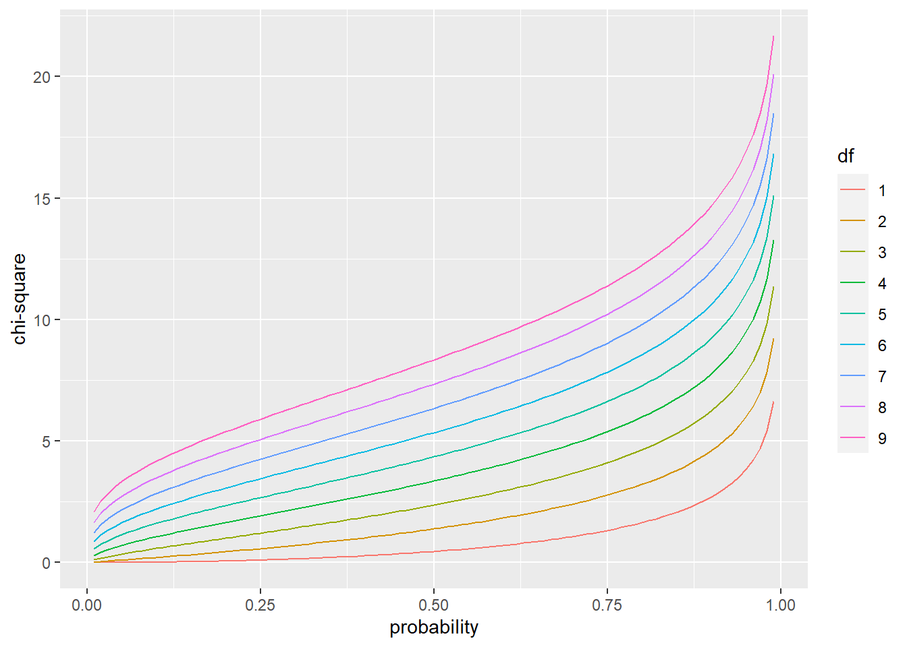

Chapter 20 The Chi-square Distribution
library(tidyverse)20.1 Background
The chi-square permeates biostatistics in several important ways.
For example, the \(\chi^2\) distribution is used to generate p-values for Pearson’s chi-square test statistic, \[\chi^2=\sum_{i=1}^{n}\frac{(O_i-E_i)^2}{E_i}\] which is used in goodness-of-fit and independence tests.
The \(\chi^2\) distribution is used to generate p-values for tests of homogeneity and also to calculate the confidence intervals of standard deviations.
A good way to think of the chi-square distribution more generally is as a probability model for the sums of squared variables. As such, the \(\chi^2\) test statistic only takes on positive values.
If \[X_1,..,X_k\] is a set of standard normal variables, then the sum of their squared values is a positive, random variable \(Q\), \[Q=\sum_{i=1}^{k}{X^2_i}\] that will take on a \(\chi^2\) distribution with \(k\) degrees of freedom.
The mean of any \(\chi^2\) distribution is \(k\) while it’s variance is \(2k\). The distributions are skewed (mode = \(k-2\)) except that those having very large degrees of freedom, which are approximately normal.
20.2 dchisq
dchisq is the \(\chi^2\) probability density function in R.
The simplest way to think of dchisq is as the function that gives you the probability distribution of the \(\chi^2\) test statistic.
The \(\chi^2\) probability density function is:
\[p(x)=\frac{e^\frac{-x}{2}x^{\frac{k}{2}-1}}{2^\frac{k}{2}\Gamma(\frac{k}{2})}\]
Given a chi-square value and the degrees of freedom of the dataset as input, dchisq returns the probability for a given chi-square value.
For example, if a 2X2 test of independence (df=1) returns a \(\chi^2\) value of 4, the probability of obtaining that value (its “density”) is equal to 0.02699:
dchisq(x=4, df=1)## [1] 0.02699548For continuous distributions like the \(\chi^2\) such point density values are usually not particularly useful. In contrast, inspecting how the function behaves over a range of \(\chi^2\) values and at different df’s is informative.
That’s plotted below:
df = 9
x = seq(1,16,0.05)
pxd <- matrix(ncol=df, nrow=length(x))
for(i in 1:df){
pxd[,i] <- dchisq(x, i)
}
pxd <- data.frame(pxd)
colnames(pxd) <- c(1:df)
pxd <- cbind(x, pxd)
pxd <- gather(pxd, df, px, -x)
ggplot(pxd, aes(x, px, color=df)) +
geom_line() + xlab("chi-square")+ylab("p(chi-square)")
20.3 pchisq
pchisq is the \(\chi^2\) cumulative distribution function in R.
The simplest way to think about the pchisq function is as the probabilities under the \(\chi^2\) curve.
The \(\chi^2\) cumulative distribution function is:
\[p(x)=\frac{\gamma(\frac{k}{2}\times\frac{x}{2})}{\Gamma(\frac{k}{2})}\] It returns the cumulative probability for an area under the curve up to a given \(\chi^2\) value.
For example, the probability that a \(\chi^2\) value with 1 degree of freedom is less than 4 is 0.9544997:
pchisq(q=4, df=1, lower.tail = T)## [1] 0.9544997df = 9
x = seq(1,16,0.05)
pxd <- matrix(ncol=df, nrow=length(x))
for(i in 1:df){
pxd[,i] <- pchisq(x, i, lower.tail = T)
}
pxd <- data.frame(pxd)
colnames(pxd) <- c(1:df)
pxd <- cbind(x, pxd)
pxd <- gather(pxd, df, px, -x)
ggplot(pxd, aes(x, px, color=df)) +
geom_line() + xlab("chi-square")+ylab("cumulative p(chi-square)")
20.3.1 Calculating p-values from pchisq
The pchisq function is used to calculate a p-value.
A p-value is a probability that a \(\chi^2\) value, x, is as large or larger. \[p-value = P(\chi^2 \ge x)\]
This can be calculated using the pchisq function simply by changing lower.tail argument in the function tolower.tail = F
pchisq(q=4, df=1, lower.tail = F)## [1] 0.04550026Here p-values for the \(\chi^2\) at various df’s:
df = 9
x = seq(1,16,0.05)
pxd <- matrix(ncol=df, nrow=length(x))
for(i in 1:df){
pxd[,i] <- pchisq(x, i, lower.tail = F)
}
pxd <- data.frame(pxd)
colnames(pxd) <- c(1:df)
pxd <- cbind(x, pxd)
pxd <- gather(pxd, df, px, -x)
ggplot(pxd, aes(x, px, color=df)) +
geom_line() + xlab("chi-square")+ylab("p-value")
20.4 qchisq
qchisq is the inverse of the \(\chi^2\) cumulative distribution function.
This function takes a probability value as an argument, along with degrees of feedom, and returns a \(\chi^2\) value corresponding to that probability.
Here’s the \(\chi^2\) value corresponding to the 95th percentile of a distribution with 3 degrees of freedom:
qchisq(0.95, 3)## [1] 7.814728Here is what the quantile \(\chi^2\) distribution looks like for several different df’s:
df = 9
p = seq(0.01, .99, 0.01)
xpd <- matrix(ncol=df, nrow=length(p))
for(i in 1:df){
xpd[,i] <- qchisq(p, i)
}
xpd <- data.frame(xpd)
colnames(xpd) <- c(1:df)
xpd <- cbind(p, xpd)
xpd <- gather(xpd, df, qchisq, -p)
ggplot(xpd, aes(p, qchisq, color=df)) +
geom_line() + xlab("probability")+ylab("chi-square")
20.5 rchisq
R’s rchisq function is used to generate random values corresponding to \(\chi^2\)-distributed data. This has utility in simulating data sets with skewed values, for example, to mimic overdispersed Poisson distributions.
Here are 10 random values from a \(\chi^2\) distribution with 3 degrees of freedom:
rchisq(10, 3)## [1] 1.2339559 10.1633586 1.0397119 3.8734948 2.4123928 1.2531232
## [7] 8.0267277 2.0103942 3.4498200 0.4003688